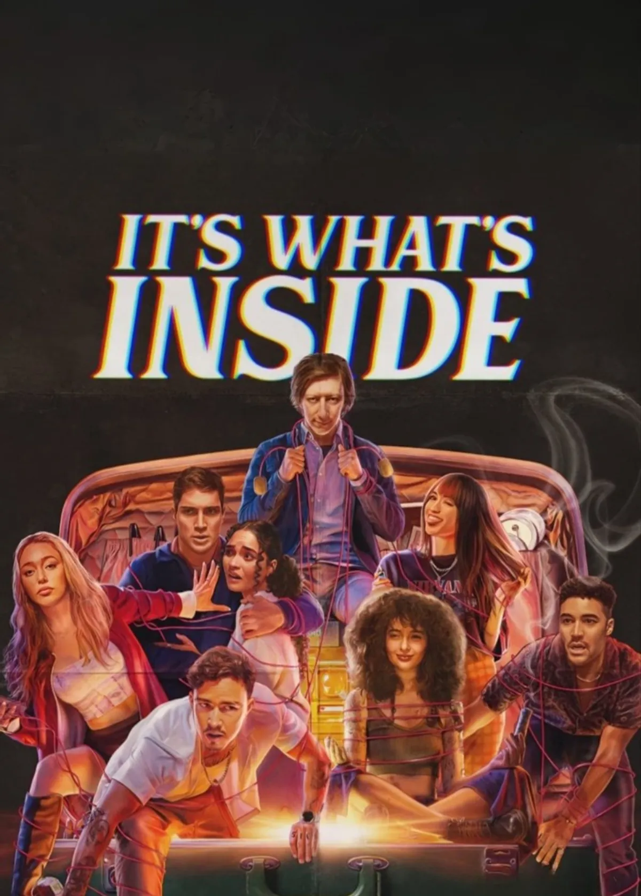
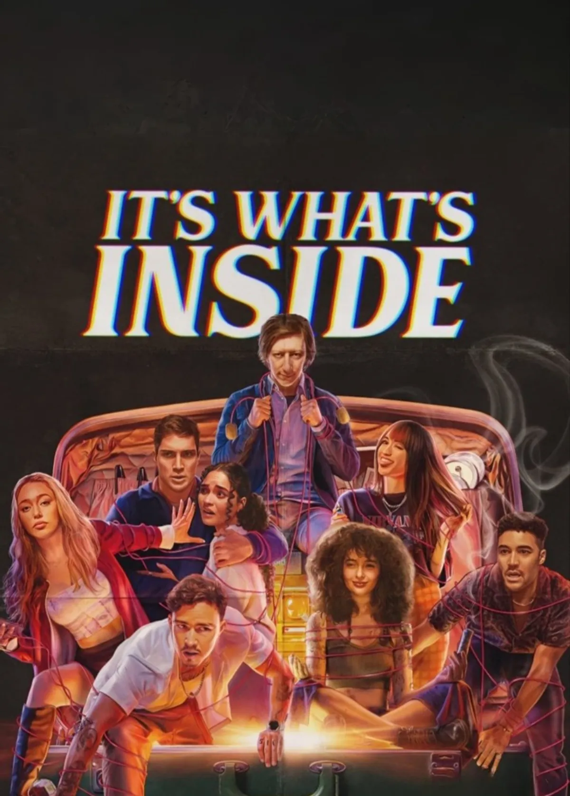
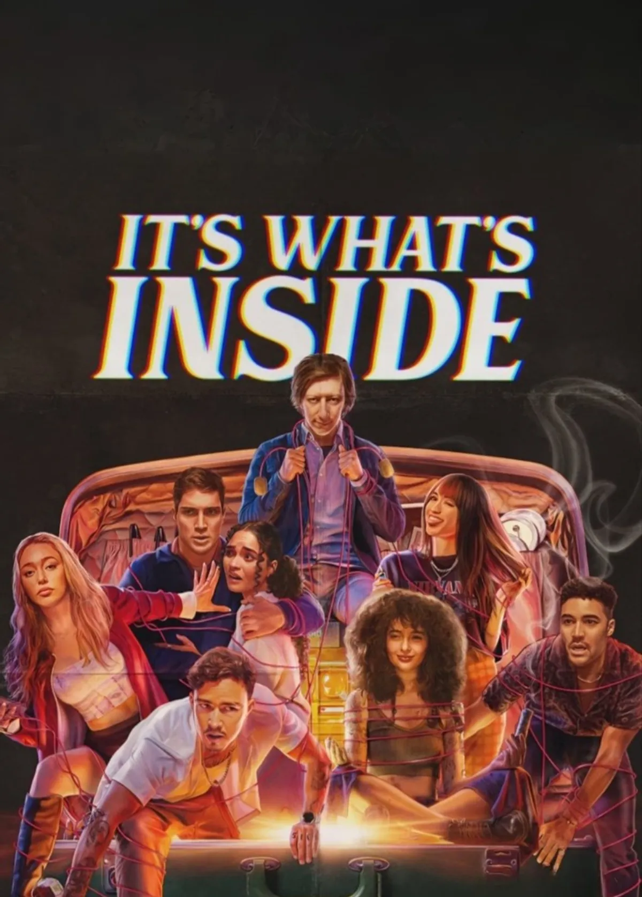
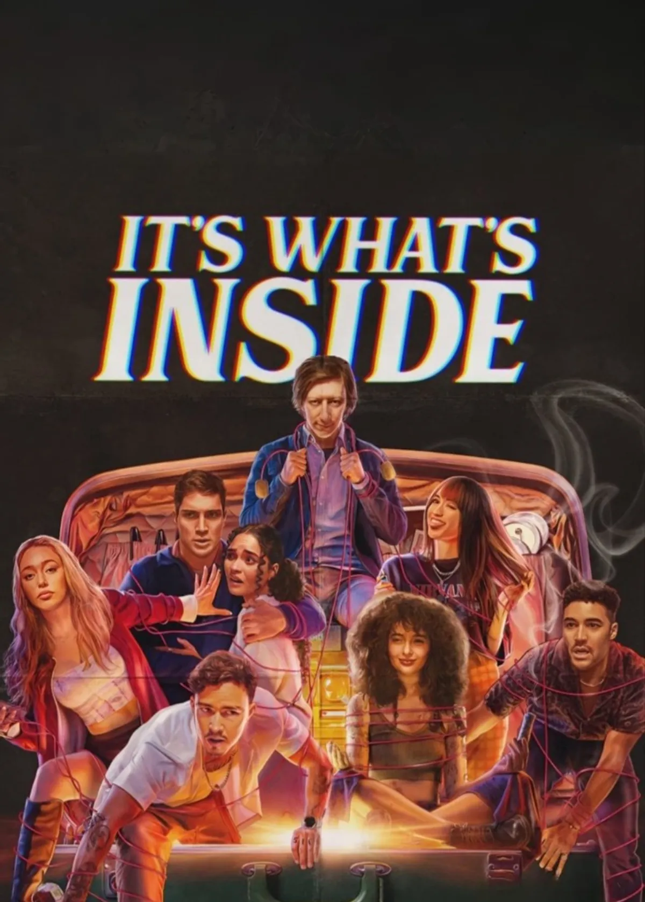
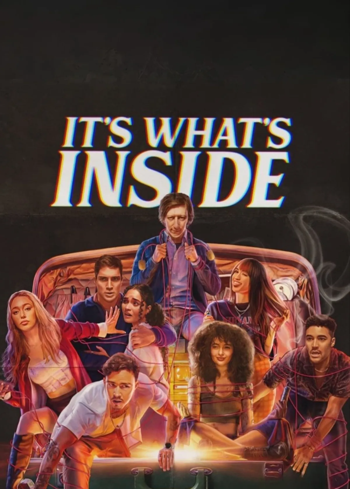
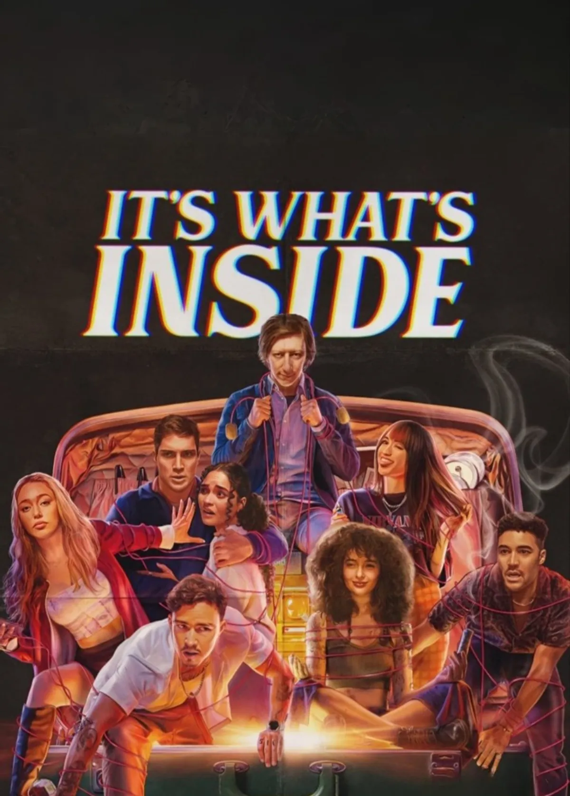

What I like best about oldboy are the various storytelling devices used by the movie. Oon one hand you have the main character telling the story from his pov so you don't have the full picture. Then you are given the puzzle pieces to fill in those blanks for yourself. The cinematography of this movie is one of a kind and the more you pay attention, the more you realize the underlying meaning of what is shown to you. It's a movie I really enjoyed watching and I'd recommend others watch but not watch again myself. The way all the pieces fit into place at the end really scratched my brain.
The unique way the movie portrayed flashbacks was really cool for me. The cinematic use of colors in the scenes really improved the storytelling. The story itself is a bit above average I guess, some scenes kind of made me cringe. Overall it's a movie I would recommend to a friend or watch again with them. One of the very few movies where I absolutely abhor the protagonist/main character.